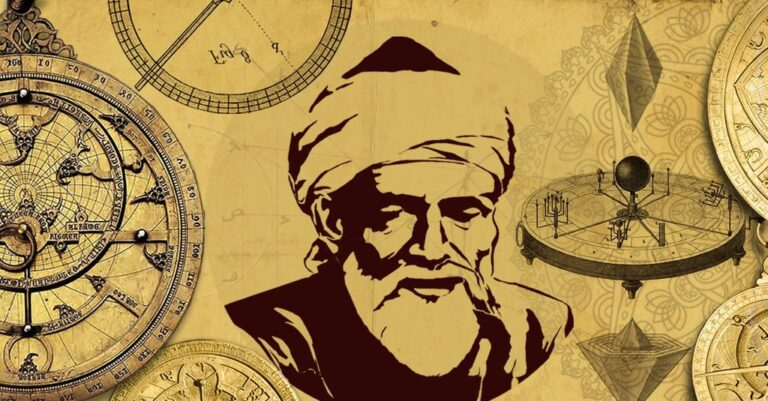

Welcome to the Mathematical World!
Al-Qalasadi
Pioneer of Algebraic Symbolism in the Islamic World
Al-Qalasadi (1412 – 1486 CE), full name Abu al-Hasan Ali ibn Muhammad al-Qalasadi, was a prominent Arab mathematician from Al-Andalus, born in Baza near Granada in modern-day Spain. He is especially known for being one of the first mathematicians in the Islamic world to use algebraic symbolism systematically — a significant step in the evolution of algebra toward symbolic abstraction.
Al-Qalasadi lived during a period of cultural transition in the late Nasrid Kingdom of Granada and eventually migrated to North Africa due to political unrest. He studied religious sciences and mathematics, integrating logical and philosophical rigor into his mathematical approach. His contributions reflect the culmination of centuries of Arabic mathematical tradition, while also laying groundwork for the symbolic algebra that would emerge in Europe.
One of his key works is the Sharh al-Tuhfat al-Bahiyya, a commentary on earlier algebraic texts, where he introduced symbols for mathematical operations and variables. These symbols were primitive compared to modern notation but marked a crucial innovation in expressing algebraic ideas concisely and consistently. He used Arabic letters to denote unknowns and operations — such as addition, subtraction, and extraction of roots — facilitating a more generalized approach to solving equations.
Al-Qalasadi also contributed to arithmetic and number theory, particularly in the context of inheritance calculations, commercial transactions, and legal rulings in Islamic jurisprudence. His methods involved the systematic use of fractions, ratios, and roots, and he continued the tradition of solving polynomial equations algebraically. He worked on indeterminate problems and equations of the form:
- \
- \
- Among the earliest Islamic mathematicians to use symbolic algebra notation
- Authored texts integrating mathematics with Islamic law and inheritance
- Used systematic methods to handle fractions, roots, and polynomials
- Bridged classical Arabic mathematics and European symbolic developments
Al-Qalasadi's legacy lies in his effort to simplify and systematize algebraic procedures, setting the stage for the algebraic formalism that would emerge in Renaissance Europe. His innovations in symbolic representation and structured computation influenced both Islamic and Western mathematical traditions, making him a critical figure in the historical development of algebra.